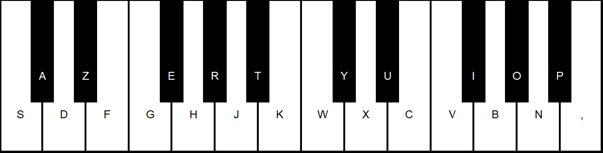
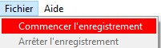
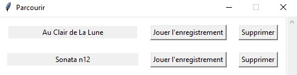
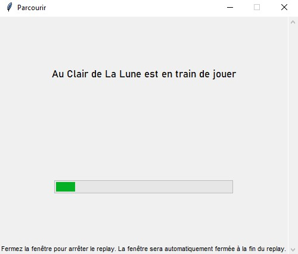

Présentation du projet et ses objectifs
Qu'est-ce que c'est ?
Ce logiciel est un logiciel de piano. Il permet ainsi de jouer à votre instrument favori simplement avec votre ordinateur et votre clavier. En effet, vous aurez accès à deux octaves complètes depuis le bout de vos doigts. De plus, il permet aussi de vous enregistrer grâce à un système entièrement nouveau et créé pour l'occasion. Vous pourrez donc gérer vos différents enregistrements depuis le logiciel lui-même sans aucun logiciel tierce.Ce logiciel a été créé de A à Z par nos soins, notamment à l'aide de différents modules tels que Tkinter, pour tout ce qui est interface graphique et relation à l'utilisateur, SimpleAudio, pour tout ce qui est relié au son, CSV et Time, pour tout ce qui touche à l'enregistrement des morceaux, et finalement OS, pour tout ce qui est relié avec l'ordinateur en soi.
Concrètement, c'est comment ?
| Fonctionnalité | Screenshot |
|---|---|
| 24 touches, avec aide disponible |  |
| Enregistrement en un clic |  |
| Gestion des enregistrements aisée |  |
| Replay en direct des enregistrements |  |